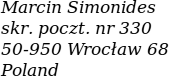

Want to express your appreciation for the project?
I would gladly receive a postcard from where you live! Here's my P.O. box address:

All work on Homer happens in my spare time. It doesn't require much funds but it requires
a lot of motivation. One look at the postcards that I have received reminds me that there are users
for whom this app is very important.
I am grateful to everone who sent one: thank you!
There are other ways to help with the project.